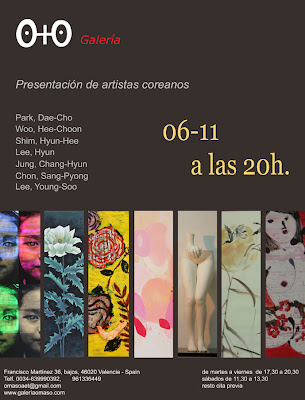

"Arte Korea":Exposición del 06-11 a 06-12-2009
viernes, 6 de noviembre de 2009
{kind=link}

Arte Korea
Enriqueta hueso directora de la Galería O+O en Valencia, inició su andadura como galerista con la idea de traspasar fronteras y acercar al espectador a las distintas visiones del arte que se desarrollan en el mundo, haciendo especial hincapié -pese a las distancias geográficas y culturales cada vez mas minimizadas por las nuevas tecnologías en un mundo tendente a la globalización-, en tender puentes y unir lazos culturales entre oriente y occidente. Oriente y occidente con sus peculiares diferencias son sin lugar a dudas dos ámbitos llamados ineludiblemente a convivir en el plural mundo del arte.
Enriqueta Hueso ha sabido llamar a esa puerta lejana y si bien en un principio nos presentaba en su sede de Valencia una nutrida representación de 35 artistas de Taiwán, participando a su vez con artistas de su galería en ferias como SHANGHAI ART FAIR 2007, BEIJING FAIR ART SALON 2008, SOAF SEUL KOREA y KIAF/09 SEUL KOREA.
Ahora fruto de este trabajo y en colaboración con la galería Myoung gallery de Seúl Korea, aúnan su esfuerzo para exponer por primera vez en Valencia una seleccionada muestra de artistas coreanos de reconocido prestigio en el panorama artístico internacional.
Arte Korea es el título de esta exposición, en la que nos presenta a los artistas: Park Dae Cho, con obras en transparencias, retratos donde destaca la búsqueda del más radical de los verismos mediante una transposición de la realidad. Woo Hee Choon, de clara factura oriental y sobria paleta contrastando con el brillante colorido de Shim Hyun Hee, que nos muestra obras en las que predomina el retrato y la composición floral. La abstracción y las formas redondeadas de Lee Hyun en monocrómicas composiciones cargadas de matices se contraponen a la reivindicación del clasicismo marcado en la escultura de Jung Chang Hyun en las que el artista entabla un interesante diálogo mediante un claro surrealismo de las formas. Aporta también a este conjunto lo más destacado de la tradición oriental donde los símbolos y la caligrafía adquieren un importante papel, la mezcla del arte oriental más sensible junto a la fuerza del expresionismo clásico reflejado en las obras de Chon Sang Pyong.